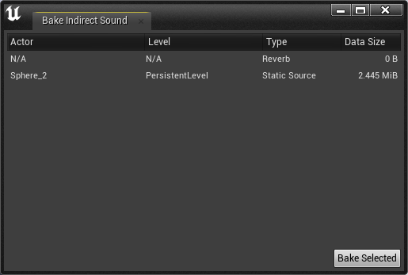

Menu Commands¶
All of these commands are available under the Steam Audio menu in Unreal’s main toolbar.
- Add Geometry Component to all Actors
Adds a Steam Audio Geometry component to all actors in the currently open map that contain a Static Mesh component and do not already contain a Steam Audio Geometry component.
- Remove Geometry Component from all Actors
Removes the Steam Audio Geometry component from all actors in the currently open map that contain a Steam Audio Geometry component.
- Export Static Geometry
Exports the static geometry of all sublevels of the currently open map. When doing this for the first time, you will be prompted for a file name and directory under which to save the assets for each sublevel.
- Export Static Geometry (Current Level)
Exports the static geometry of the currently active sublevel to an asset file.
- Export Static Geometry to .obj
Exports the static geometry of all sublevels of the currently open map to an OBJ file. This is intended for debugging purposes.
- Export Static Geometry to .obj (Current Level)
Exports the static geometry of the currently active sublevel to an OBJ file. This is intended for debugging purposes.
- Export All Dynamic Objects
Exports all dynamic objects in all sublevels of the currently open map to their corresponding asset files. This only exports dynamic objects that have already been exported at least once by clicking Export Dynamic Object in the Details tab. This does not export any dynamic objects that are instances of Blueprint classes or other Actor classes where the Steam Audio Dynamic object component is part of the class’ default components.
- Export All Dynamic Objects (Current Level)
Exports all dynamic objects in the currently active sublevel to its corresponding asset file.
- Bake Indirect Sound
Opens the Bake Indirect Sound window, which lets you bake multiple kinds of baked indirect sound data (e.g. reflections, reverb, pathing) for the currently open map.
The Bake Indirect Sound window shows a list of baked static source reflections, baked static listener reflections, reverb, and pathing that can be baked for the current map. Select one or more items from the list and click Bake Selected to bake all selected items in a single batch.